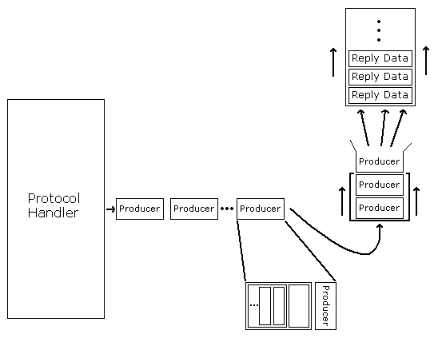

Data flow, both input and output, is asynchronous. This is signified by the request and reply queues in the above diagram. This means that both requests and replies can get 'backed up', and are still handled correctly. For instance, HTTP/1.1 supports the concept of pipelined requests, where a series of requests are sent immediately to a server, and the replies are sent as they are processed. With a synchronous request, the client would have to wait for a reply to each request before sending the next.
The input data is partitioned into requests by looking for a terminator. A terminator is simply a protocol-specific delimiter - often simply CRLF (carriage-return line-feed), though it can be longer (for example, MIME multi-part boundaries can be specified as terminators). The protocol handler is notified whenever a complete request has been received.
The protocol handler then generates a reply, which is enqueued for output back to the client. Sometimes, instead of queuing the actual data, an object that will generate this data is used, called a producer.
The use of producers gives the programmer
extraordinary control over how output is generated and inserted into
the output queue. Though they are simple objects (requiring only a
single method, more(), to be defined), they can be
composed - simple producers can be wrapped around each other to
create arbitrarily complex behaviors. [now would be a good time to
browse through some of the producer classes in
producers.py.]
The HTTP/1.1 producers make an excellent example. HTTP allows replies to be encoded in various ways - for example a reply consisting of dynamically-generated output might use the 'chunked' transfer encoding to send data that is compressed on-the-fly.

In the diagram, green producers actually generate output, and grey ones transform it in some manner. This producer might generate output looking like this:
HTTP/1.1 200 OK
Content-Encoding: gzip
Transfer-Encoding: chunked
Header ==> Date: Mon, 04 Aug 1997 21:31:44 GMT
Content-Type: text/html
Server: Medusa/3.0
Chunking ==> 0x200
Compression ==> <512 bytes of compressed html>
0x200
<512 bytes of compressed html>
...
0
Still more can be done with this output stream: For the purpose of efficiency, it makes sense to send output in large, fixed-size chunks: This transformation can be applied by wrapping a 'globbing' producer around the whole thing.
An important feature of Medusa's producers is that they are
actually rather small objects that do not expand into actual output
data until the moment they are needed: The async_chat
class will only call on a producer for output when the outgoing socket
has indicated that it is ready for data. Thus Medusa is extremely
efficient when faced with network delays, 'hiccups', and low bandwidth
clients.
One final note: The mechanisms described above are completely
general - although the examples given demonstrate application to the
http protocol, Medusa's asynchronous core has been
applied to many different protocols, including smtp,
pop3, ftp, and even dns.